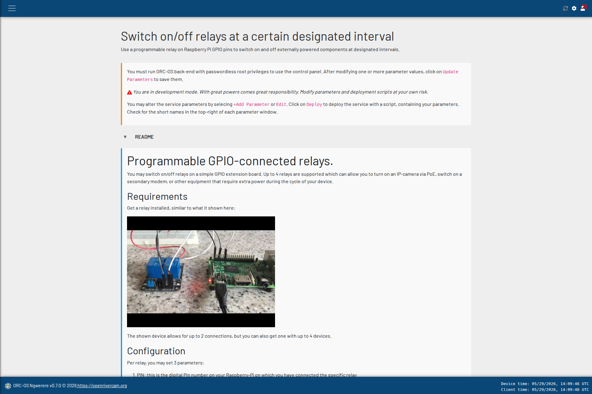

Example service: relay management#
What are we going to create?#
Let’s implement a full service interactively. This background service will manage relays that are connected to your device. A relay board with one, two, or many more relays can be connected to the GPIO pins of your device. With some scripting, you can then provide power to external devices. This is ideal when you want to control for instance a power hungry IP camera. Basically, every time you want to process a video, you literally only need the camera to switch on a few seconds. IP cameras do not typically have their own power management and therefore you can take charge of this yourself, using a simple background process.
What we want is a script that does the following:
It continuously counts the time since the start
When a certain time interval has passed, it turns on a relay
It keeps the relay on for a certain period, and then turns it off again
It then continues counting the time until the next time interval has passed, and so on
It does this for a maximum of 2 relays, which all can have their own time schedule. Of course you can extend the service to more if you want.
Theoretically with this, we could control 2 different external devices, all requiring their own frequency to turn on and off. If you need even more, extending the script and parameters is straightforward.
Start in developers mode#
First get the back end started in developers mode. We here assume that the web server runs as a daemon systemd process as described in the installation instructions. So let’s first stop the web server and then turn it on interactively in developers mode
# stop the web server daemon
sudo systemctl stop orc-api
# set the DEV MODE environment variable to 1 (true)
export ORC_DEV_MODE=1
# start the web server in development mode
uvicorn orc_api.main:app --host 0.0.0.0 --port 5000 --workers 1
Perfect! It should now run. Open up the web interface and navigate to . You should see a button “Create new service”. Click on this and fill in the form as follows:
Short name: gpio-relays
Long name: Switch on/off relays at a certain designated interval
Service Type: One-time service
Description: Use a programmable relay on Raspberry Pi GPIO pins to switch on and off externally powered components at designated intervals.
Fill in the README section with the text provided in the next section below.
For the README section, you may copy paste the following text, which contains some Markdown language. This README will be shown to a regular user when the user wants to modify parameter values or control the service.
# Programmable GPIO-connected relays.
You may switch on/off relays on a simple GPIO extension board. Up to 2
relays are supported which can allow you to turn on an IP-camera via PoE, switch on a secondary modem, or other
equipment that require extra power during the cycle of your device.
## Requirements
Get a relay installed, similar to what it shown here:
[](https://www.youtube.com/watch?v=ezzKB4RTKW0)
## Configuration
Per relay, you may set 3 parameters:
1. PIN: this is the digital Pin number on your Raspberry-Pi on which you have connected the specific relay
2. FREQ: the amount of seconds in between cycles, e.g. 600 for 10 minutes
3. DURATION: the amount of seconds the relay should be closed, e.g. 15, for 15 seconds.
## Use case
Let's assume you have an IP-camera connected with an event programmed to record a 5 second video
when switching on. You have experimented and know that the camera takes 15 seconds to boot up, warm up and record
the video. You want this to occur every 30 minutes.
- Connect Vin on a 5V Pin on the Raspberry Pi
- Connect GND to a GND pin on the Raspberry Pi
- Connect the first relays to PIN 17 on the Raspberry Pi.
- In the parameter settings, Set PIN1 on 17, FREQ1 on 1800 (this is half an hour measured in seconds), and
DURATION1 on 15.
## Recommendations
We recommend trying this out in the office before installing in the field to make sure
the relays do exactly what you expect.
Click on “Create service” and you should now see the service management page appear. Check out what you have created. Also open the README section. You will see a nicely Markdown formatted section here with a embedded youtube video.
Now we will need parameters! If you read the description, you will already know that we need 3 parameters per relay, and we have 2 relays. So we will need to add 6 parameters in total.
Click on the “Add parameter” button and for relay one, add the following parameters one by one:
Short name |
Long name |
Data Type |
Default value |
Nullable |
Description |
|---|---|---|---|---|---|
PIN1 |
Pin 1 |
Integer |
leave empty |
True |
GPIO pin at which first relay is connected |
FREQ1 |
Pin 1 frequency of switching |
Float |
leave empty |
True |
Interval for switching on Relay 1 (sec) |
DURATION1 |
Relay 1 duration on-time |
Float |
leave empty |
True |
Time relay 1 should remain switched on every cycle (sec) |
PIN2 |
Pin 2 |
Integer |
leave empty |
True |
GPIO pin at which second relay is connected |
FREQ2 |
Pin 2 frequency of switching |
Float |
leave empty |
True |
Interval for switching on Relay 2 (sec) |
DURATION2 |
Relay 2 duration on-time |
Float |
leave empty |
True |
Time relay 2 should remain switched on every cycle (sec) |
Once you have added these parameters, the context of the service is entirely known. When you open the service, you should see something like shown below.
{kind=link}

The service management page after creating the parameters.#
Deploy#
The only thing we now need is a real script, that runs in the background, and uses the set parameters. The parameters are all passed as environment variables, using the short name of the parameter, in capital letters. So for instance, the value of the parameter “PIN1” will be passed to the script as an environment variable called “PIN1”. Even if you would set “pin1”, upon storing the parameter it will be capitalized.
To deploy, click on “Deploy”. Select “Python script” as the script type and copy-paste the code below.
If you check carefully, you will see lines where the environment variables are read using os.getenv.
f"PIN{n + 1}" is used to read the pin number for relay 1 and relay 2, and so on for the other parameters where
n is enumerated in a range from zero to MAX_RELAY_NR. We here set it to a mere 2 but of course
if you need 8 relays, you can simply set this to 8 and add 6 * 3 = 18 parameters with the enumeration logic to
extend the abilities of this service.
You also see a line like while not shutdown_requested:. This line basically ensures that all code below it will
repeat continuously until someone stops the service. When that
happens the code exits this loop and goes to the finally section, where we attempt to switch off all relays before
shutting down the service. This is important, otherwise relays may stay closed and provide power continuously to
power hungry devices. When you stop this service, all relays should open so that no power is consumed by any external
device.
import logging
import os
import sys
import RPi.GPIO as GPIO
import signal
import time
# globals
FMT = "%(asctime)s - %(name)s - %(module)s - %(levelname)s - %(message)s"
MAX_RELAY_NR = 2 # do you want more than 2? Just change this nr!
# Add a global flag for graceful shutdown
shutdown_requested = False
def create_logger(name="gpio_relay", log_level=logging.INFO, fmt=FMT):
"""Create a logger that shows in the front end console with the specified format and log level."""
logger = logging.getLogger(name)
for _ in range(len(logger.handlers)):
logger.handlers.pop().close() # remove and close existing handlers
logging.captureWarnings(True)
logger.setLevel(log_level)
console = logging.StreamHandler(sys.stdout)
console.setLevel(log_level)
console.setFormatter(logging.Formatter(fmt))
logger.addHandler(console)
return logger
# start the logger
logger = create_logger()
def handle_signal(signum, frame):
"""Ensure that a shutdown signal is handled gracefully, making sure all relays are switched off before shutting down."""
global shutdown_requested
logger.info(f"Received signal {signum}, shutting down gracefully...")
shutdown_requested = True
def raise_error_and_exit(message):
"""Log an error message and raise a ValueError."""
logger.error(message)
raise ValueError(message)
# Register signal handlers for SIGTERM and SIGINT
signal.signal(signal.SIGTERM, handle_signal)
signal.signal(signal.SIGINT, handle_signal)
# valid digital pins only
valid_pins = [17, 27, 22, 23, 24, 26, 5, 6, 16, 20, 21]
# Use BCM pin numbering
GPIO.setmode(GPIO.BCM)
# check which pins to read, and store them in a list, only if the env variable is set, otherwise skip
pins = [os.getenv(f"PIN{n + 1}", None) for n in range(MAX_RELAY_NR)]
# check if any of the pins are not in the valid set, and collect other data
freq = [] # seconds
duration = []
ids = []
for n, pin in enumerate(pins):
# set duration and frequency for all set pins
if pin is None:
freq.append(None)
duration.append(None)
ids.append(None)
continue # Skip if the environment variable is not set
if int(pin) not in valid_pins:
msg = f"Invalid GPIO pin: {pin}. Must be in set {valid_pins}"
raise_error_and_exit(msg)
# check freq and duration both must be set and duration not more than frequency
freq_env = os.getenv(f"FREQ{n + 1}", None) # default frequency is 5 minutes (300 seconds)
if freq_env is None:
msg = f"FREQ{n + 1} (frequency) must be set if PIN{n + 1} (pin nr of relay {n + 1}) is set"
raise_error_and_exit(msg)
duration_env = os.getenv(f"DURATION{n + 1}", None)
if duration_env is None:
msg = f"DURATION{n + 1} (duration) must be set if PIN{n + 1} (pin nr of relay {n + 1}) is set"
raise_error_and_exit(msg)
if duration_env is not None and freq_env is not None:
if float(duration_env) > float(freq_env) - 2:
msg = f"Duration to switch on Relay {n + 1} {duration_env} should be at least 2 seconds shorter than its frequency {float(freq_env)} seconds."
raise_error_and_exit(msg)
freq.append(float(freq_env)) # Convert frequency to seconds
duration.append(float(duration_env))
ids.append(n + 1)
# now remove any None values from the pins lists, and convert to int
pins = [int(pin) for pin in pins if pin is not None]
freq = [f for f in freq if f is not None]
duration = [d for d in duration if d is not None]
ids = [i for i in ids if i is not None]
# preparations are done, now do the actual work!
# activate pins
for pin in pins:
GPIO.setup(pin, GPIO.OUT)
# now print settings to user, and check if they are correct, if not raise error, otherwise continue with the relay switching
logger.info("The following settings for relay switching are found:")
header = f"{'Pin':<6} {'Frequency (s)' :<10} {'Duration (s)':10}"
logger.info(header)
logger.info("-" * len(header))
for pin, f, d in zip(pins, freq, duration):
logger.info(f"{pin:<6} {f:<10} {d:<10}")
# with time sleeps of one second, check if timing surpasses the frequency, and if so, switch on the relay for
# the duration specified, then switch off again, and repeat
jobs = [
{"id": i, "pin": pin, "freq": f, "duration": d, "time0": time.time(), "time1": time.time(), "state": 0} for (i, pin, f, d) in zip(ids, pins, freq, duration)
]
start_time = time.time()
try:
while not shutdown_requested:
for job in jobs:
cur_time = time.time()
# check if the time since the last switch on is greater than the frequency, if so, switch on the relay for the duration specified, then switch off again
if job["state"] == 0 and cur_time > job["time0"]:
logger.info(f"{int(cur_time - start_time):<4} s: Switching relay {job['id']} on for {job['duration']} seconds")
GPIO.output(job["pin"], GPIO.LOW) # Turn relay on
job["time0"] = cur_time + job["freq"] # Reset the timer for the next cycle
job["time1"] = cur_time + job["duration"] # Set the time when relay must switch off
job["state"] = 1 # Set state to on
elif job["state"] == 1 and cur_time > job["time1"]:
logger.info(f"{int(cur_time - start_time):<4} s: Switching relay {job['id']} off after {job['duration']} seconds")
GPIO.output(job["pin"], GPIO.HIGH) # Turn relay off
# job["time0"] = cur_time # Reset the timer
job["state"] = 0 # Set state to off
time.sleep(1) # Wait 1 second
except:
raise IOError(
f"Error occurred while switching a relay on or off. Check GPIO connections and settings." \
f"I will attempt to switch off all relays before closing."
)
finally:
# attempt to switch off everything before closing.
for job in jobs:
try:
GPIO.output(job["pin"], GPIO.HIGH) # Turn relay off
logger.info(f"Switched relay {job['id']} off successfully.")
except Exception as e:
logger.error(f"Failed to switch relay {job['id']} off: {e}. It may be that some appliance is still ON!")
GPIO.cleanup() # Reset GPIO state
Note
If you select “Bash script”, naturally you should provide a script in bash language. The parameters are then
available e.g. as $PIN1 or ${PIN1} in bash language. The logic of the script is then up to you, and you can
use the example above as a template to write your own bash script for any other service.
Setting the parameters#
After you have deployed the script, the “Service control” buttons will become active. You can start the service, and check if it works as expected. Naturally, if you have not set any parameters yet nothing will happen. If you have a relay board lying around, now is the time to connect it! For instance try the following if you have a 2-relay board (if you have only one, no problem only use the first 3 parameters).
Connect Vin on a 5V Pin on the Raspberry Pi
Connect GND to a GND pin on the Raspberry Pi
Connect the first relays to PIN 17 (D17) on the Raspberry Pi.
Connect the second relays to PIN 27 (D27) on the Raspberry Pi.
Fill in the following values for the parameters:
Short name |
Value |
|---|---|
PIN1 |
17 |
FREQ1 |
5 |
DURATION1 |
1 |
PIN2 |
27 |
FREQ2 |
4 |
DURATION2 |
1 |
After setting the values, don’t forget to first click on “Update parameters” to save these to environment variables. Now click on “Start”. Your first relay should now switch on for 1 second every 5 seconds. If you have a second relay connected, it will switch on every 4 seconds for one second.
Congratulations! You have now created your first background service, and you have it running!! You can check the logs to see if everything works as expected. You can also change the parameters while the service is running, just remember to click on “Update parameters” and then “Restart” for the new parameters to take effect.
It is now time to start pondering what additional services you might want. Do you need a logger for a certain sensor? Do you want to control a secondary modem or Satellite IoT modem? Do you want to automatically log into your VPN network for remote control? Do you want to automatically switch on and off your device at certain times of the day? The possibilities are endless, and you can get started with any of these in a matter of minutes by following the same steps as above. Happy coding!